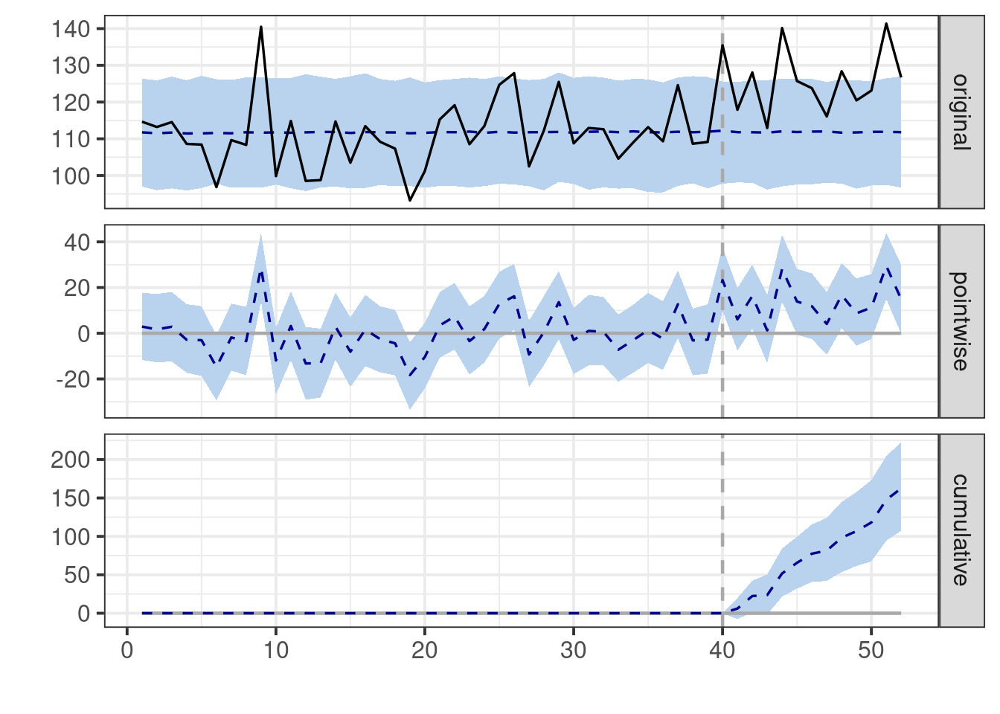
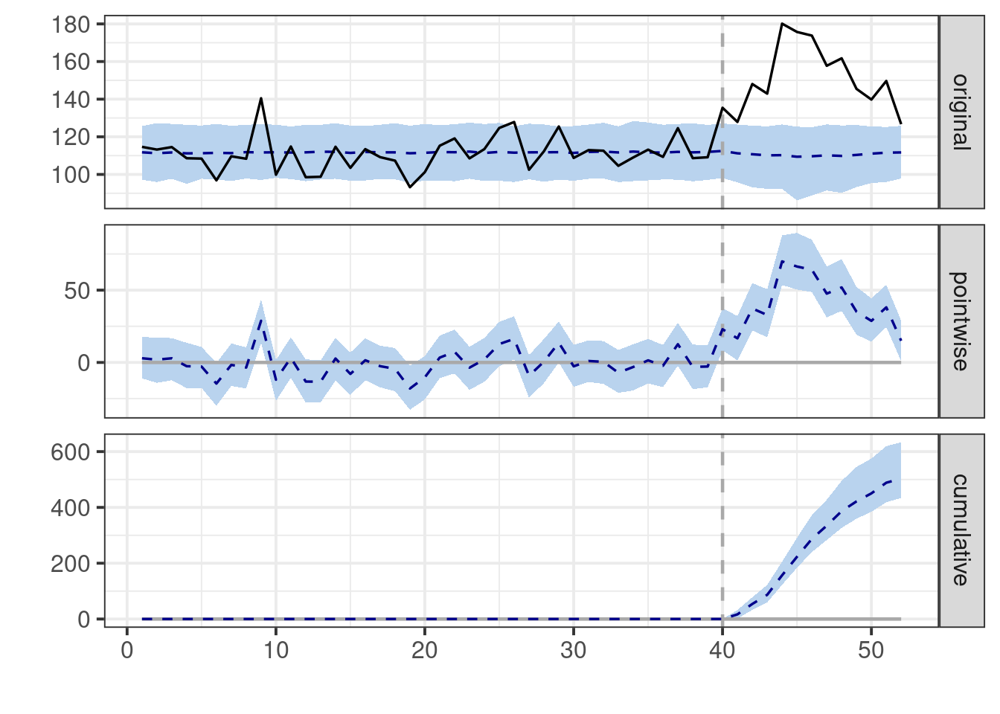
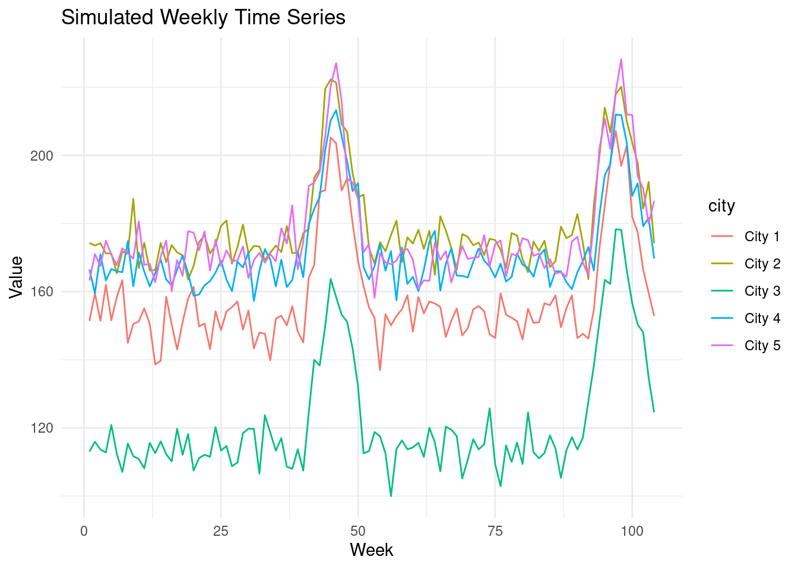
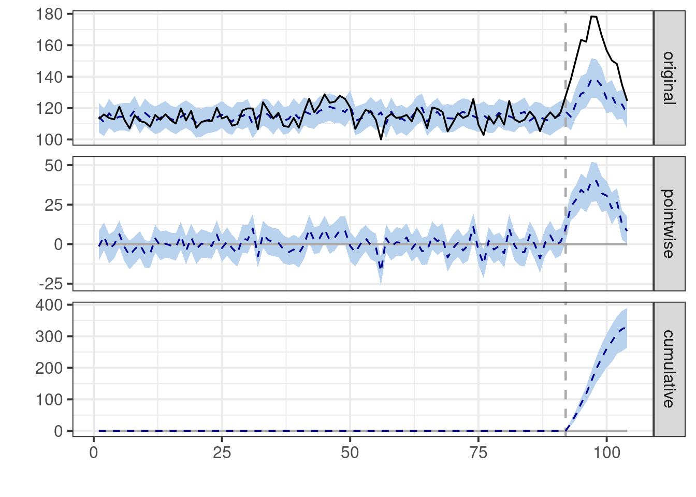
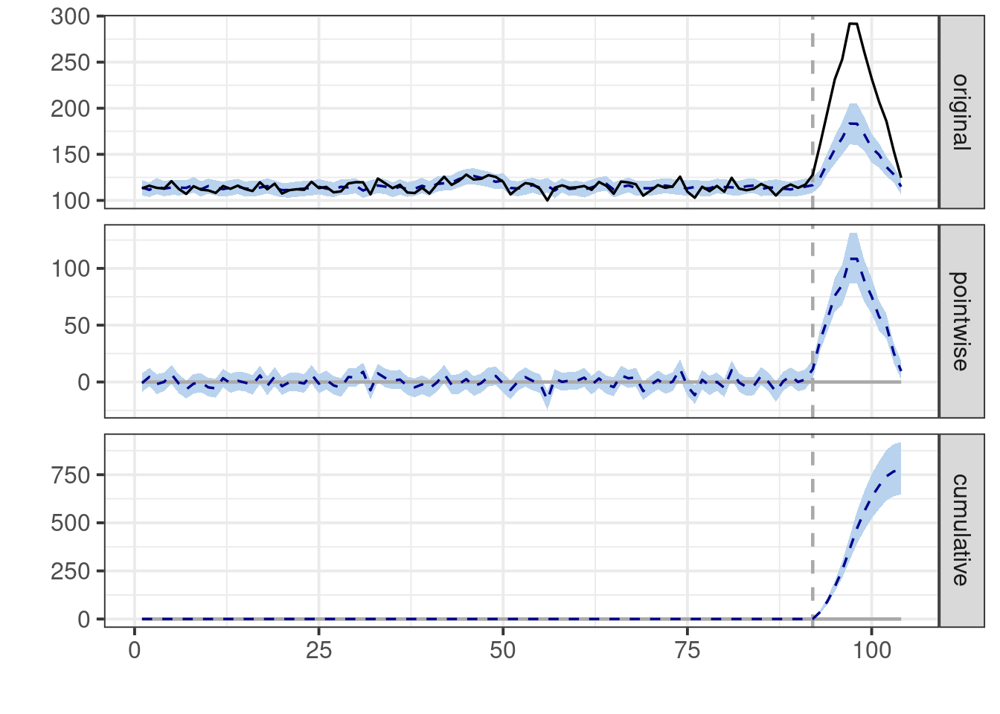
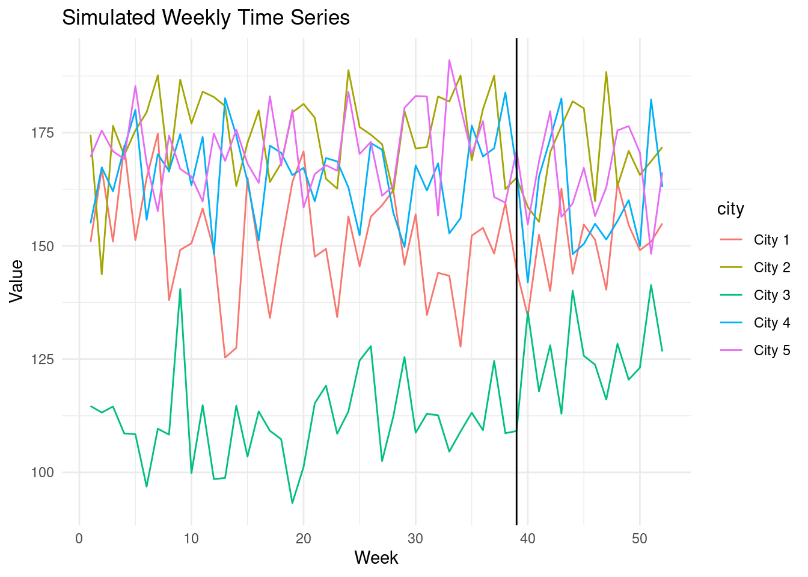
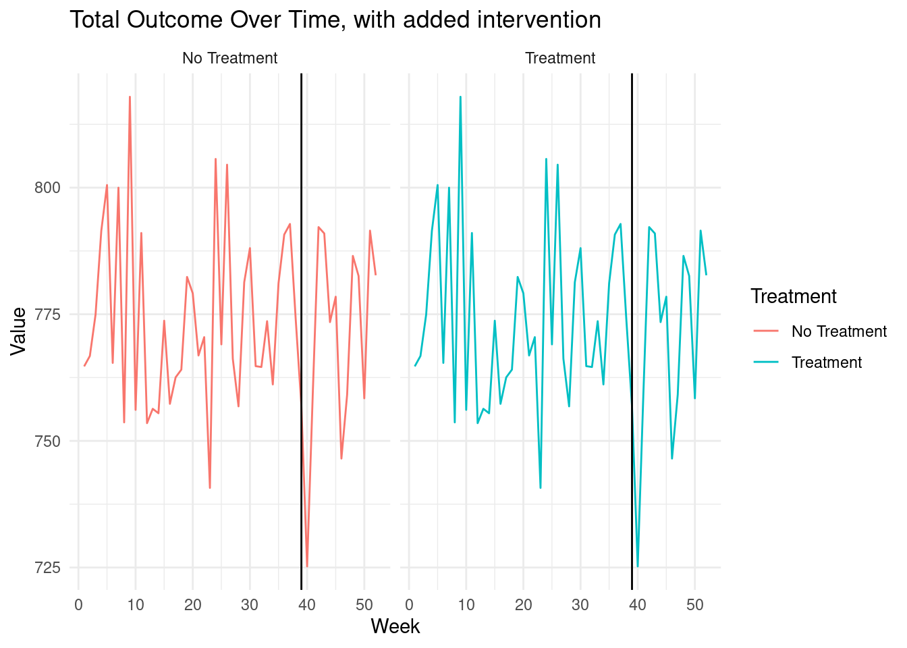

In the fast-paced digital landscape, businesses continuously seek ways to measure the impact of their interventions, such as marketing campaigns, pricing adjustments, or product launches. The difficulty arises in discerning the intervention’s effect from the natural fluctuations of business metrics. Bayesian structural time series emerges as a tool that, when employed judiciously, can leverage data to steer your decisions. However, if used without grasping the underlying assumptions, it can lead to misguided choices while creating a false sense of data-driven decision-making.
Fundamentally, this method constructs a counterfactual scenario—what would have transpired if the intervention hadn’t taken place. It accomplishes this by learning patterns from the pre-intervention period and from analogous time series not subject to the intervention. The divergence between this counterfactual and the actual outcome is then ascribed to the intervention.
The {causalImpact} R package is a widely used implementation of this methodology. Let’s illustrate its application with a simple example from the package vignette:
library(CausalImpact) library(dplyr)library(ggplot2)# Generate synthetic dataset.seed(1) # Set the random seed for reproducibilityx1 <-100+arima.sim(model =list(ar =0.999), n =100) # Simulated covariatey <-1.2* x1 +rnorm(100) # Simulated outcome with a linear relationship to x1y[71:100] <- y[71:100] +10# Introduce an intervention effect in the latter part of the seriesdata <-cbind(y, x1) # Combine outcome and covariate into a data matrix# Define pre- and post-intervention periodspre.period <-c(1, 70)post.period <-c(71, 100)# Estimate causal impactimpact <-CausalImpact(data, pre.period, post.period) # Main function to estimate the impact# Visualize resultsplot(impact) # Default plot with three panels
The default plot produced by this code consists of three panels. The first panel displays the data alongside a counterfactual prediction for the post-treatment period. The second panel shows the discrepancy between the observed data and the counterfactual predictions, representing the estimated pointwise causal effect. In the third panel, these pointwise contributions are summed, resulting in a plot of the intervention’s cumulative effect.
13.1 Caveats and Assumptions
When using this tool, we must tread carefully. The allure of a method that promises to quantify causal effects is strong, but like any statistical technique, it comes with caveats that are crucial to understand.
At the heart of this method lie two critical assumptions:
Stability and Generalizability: The model assumes that the relationship between the covariates and the treated time series, which it learns from the pre-intervention period, remains stable and generalizable to the post-intervention period. In essence, it’s betting that the past is a reliable guide to the future. This is akin to assuming that if you’ve observed how interest rates affect inflation for the past decade, that relationship will hold true for the next year, regardless of any policy changes.
Unaffected Covariates: The model’s ability to construct a reliable counterfactual hinges on the assumption that the intervention does not affect the covariates used in the analysis. It’s like assuming that when the Federal Reserve changes interest rates, it doesn’t influence other economic indicators we’re using to predict inflation.
These assumptions are not mere technicalities - they’re the foundation upon which the entire inferential structure is built. If they crumble, so does our ability to draw causal conclusions.
Important
It’s paramount to remember that causality is not a property that can be magically extracted from data through algorithmic means. No matter how sophisticated the method, whether Bayesian structural time series or any other causal inference algorithm, it cannot definitively establish causality on its own. Causality emerges from our understanding of the world, our theories about how things operate, and the assumptions we are willing to embrace.
13.2 Cautionary Tale: Stability
Misinterpreting the findings of a {causalImpact} study can occur in several ways.
In practice, it may be relatively straightforward to find exogenous covariates for predicting the outcome that are not directly affected by the treatment themselves.
A critical threat, even in this setting, is the assumption of stability and generalizability of the relationship between covariates and the treated time series.
How can this assumption lead us astray? Let’s consider a few illustrative scenario
Simple Setup
Imagine we are conducting an intervention in one geographic region, and we leverage data from other regions to predict the outcome for the treated region.
generate_baseline_data<-function( n_cities,n_weeks, base_min, base_max, noise_sd){#City ID's cities <-paste("City", 1:n_cities)# Base values base_values <-runif( n_cities,min = base_min,max = base_max) # Random base value for each city sim_data <-data.frame(week =rep(1:n_weeks, times = n_cities)) %>%mutate(city =rep(cities, each = n_weeks),base_value =rep(runif(n_cities, base_min, base_max), each = n_weeks),random_noise =rnorm(n(), sd = noise_sd),value = base_value + random_noise )return(sim_data) }# Seed for reproducibilityset.seed(42)data<-generate_baseline_data(n_cities=5,n_weeks=52,base_min=100,base_max=200,noise_sd=10)ggplot(data, aes(x = week, y = value, color = city)) +geom_line() +labs(x ="Week", y ="Value", title ="Simulated Weekly Time Series") +theme_minimal()
CausalImpact performs reasonably well in a stable environment. In this example, we have 5 cities with a stable trend.
Let’s suppose our campaign is run in city 3, starting in October. The campaign has a small effect.
add_constant_treatment_effect<-function( data, target_city_id, start_week, end_week, effect_size){ data %>%mutate(treatment =ifelse( # Treatment indicator city == target_city_id & week >= start_week & week <= end_week, 1, 0) ) %>%mutate(1treatment_effect =ifelse(treatment ==1, effect_size, 0),value = value + treatment_effect # Add treatment effect to City 3's values ) -> treated_datareturn(treated_data)}treated_data <-add_constant_treatment_effect( data,target_city_id ="City 3",start_week=40,end_week=52,effect_size=15)ggplot(treated_data, aes(x = week, y = value, color = city)) +geom_line() +labs(x ="Week", y ="Value", title ="Simulated Weekly Time Series") +geom_vline(xintercept =39, color ="black")+theme_minimal()
1
Note that the true impact is 15 and constant.
Let’s see how CausalImpact fares in the face of this uncomplicated intervention.
# Data preparation for CausalImpactCI_data_prep<-function(data){ CI_input <- data %>%select(week, city, value) %>% tidyr::pivot_wider(names_from = city,values_from = value) %>%select(-week)# Get the treated city: data %>%filter(treatment ==1) %>%select(city) %>%pull() %>%unique() -> treated_city_id# Rename columnscolnames(CI_input)[colnames(CI_input) == treated_city_id] <-"Y"colnames(CI_input)[colnames(CI_input) !="Y"] <-paste0("X", 1:(ncol(CI_input)-1))# Relocate the treated city to be the first column for CI CI_input <-relocate(CI_input, Y) data %>%filter(treatment ==1) %>%select(week) %>%pull() %>%min() -> treatment_start data %>%filter(treatment ==1) %>%select(week) %>%pull() %>%max() -> treatment_end pre_period <-c(1, treatment_start) post_period <-c(treatment_start+1, treatment_end)return(list(CI_input_matrix=as.matrix(CI_input),pre_period = pre_period,post_period = post_period ))}CI_inputs<-CI_data_prep(treated_data)impact <-CausalImpact( CI_inputs$CI_input_matrix, CI_inputs$pre_period, CI_inputs$post_period)# Summary of resultssummary(impact)
Posterior inference {CausalImpact}
Average Cumulative
Actual 125 1505
Prediction (s.d.) 112 (2.5) 1342 (29.7)
95% CI [107, 116] [1282, 1397]
Absolute effect (s.d.) 14 (2.5) 163 (29.7)
95% CI [8.9, 19] [107.3, 223]
Relative effect (s.d.) 12% (2.5%) 12% (2.5%)
95% CI [7.7%, 17%] [7.7%, 17%]
Posterior tail-area probability p: 0.00101
Posterior prob. of a causal effect: 99.89919%
For more details, type: summary(impact, "report")
# Plot the resultsplot(impact)

Important
If we look at the summary table we can get by running summary(impact) the first thing you will probably notice is that the model estimates a point estimate for the average treatment effect equal to 14 which is very close to the truth (15). However, a common misinterpretation arises from the unfortunate line that reads “Posterior prob. of a causal effect: 99%”. This statement is unequivocally incorrect! Neither this package nor any other can estimate the probability of a causal effect. This number merely represents the posterior probability that the estimated effect exceeds zero.
With this simple example out of the way, let’s introduce some seasonality to see how the model handles a bit more complexity.
Example with seasonality
Let’s suppose that towards the end of the year, there’s a natural seasonal increase for every city, coinciding with our treatment start. Assume the seasonality is identical across all cities.
add_seasonal_effect<-function( data, seasonal_start, seasonal_end, magnitude){ n_seasonal_weeks <-floor((seasonal_end - seasonal_start)/2) seasonal_effect <-c(seq(0,magnitude,length.out = n_seasonal_weeks), # Seasonality Ramp Upseq(magnitude,0,length.out = n_seasonal_weeks+1)) # Seasonality Ramp Down seasonal_data <- data %>%group_by(city) %>%mutate(seasonal =ifelse( week >= seasonal_start & week <= seasonal_end, seasonal_effect,0 ) ) %>%ungroup() %>%mutate(value = seasonal + value)return(seasonal_data)}# Seasonal effectseasonal_data<-add_seasonal_effect( treated_data,seasonal_start=40,seasonal_end=52,magnitude=50)ggplot(seasonal_data, aes(x = week, y = value, color = city)) +geom_line() +labs(x ="Date", y ="Value", title ="Simulated Weekly Time Series") +theme_minimal()
# Data preparation for CausalImpactCI_inputs<-CI_data_prep(seasonal_data)impact <-CausalImpact( CI_inputs$CI_input_matrix, CI_inputs$pre_period, CI_inputs$post_period)# Summary of resultssummary(impact)
Posterior inference {CausalImpact}
Average Cumulative
Actual 152 1830
Prediction (s.d.) 111 (4.1) 1326 (48.9)
95% CI [100, 116] [1196, 1396]
Absolute effect (s.d.) 42 (4.1) 504 (48.9)
95% CI [36, 53] [434, 634]
Relative effect (s.d.) 38% (5.4%) 38% (5.4%)
95% CI [31%, 53%] [31%, 53%]
Posterior tail-area probability p: 0.00101
Posterior prob. of a causal effect: 99.89919%
For more details, type: summary(impact, "report")
# Plot the resultsplot(impact)

Notice how the estimated effect is now much larger than the true effect of our intervention.
The plots reveal the underlying issue: Our model presumes a ‘stable’ relationship based on what it learned in the pre-period, and extrapolates these patterns into the post-period. Any deviation from this extrapolated prediction is incorrectly attributed to our intervention.
Since we lack historical observations with seasonality for the model to learn from, it conflates the seasonal increases with the effect of our intervention.
What if we had more data?
You might suspect that having enough data to learn seasonal patterns from prior years would help. Let’s extend our simulation to two years to test this.
Suppose our intervention again has a modest effect in the second year. We can utilize the prior year’s data to learn the pattern of seasonality.
# Two years of baseline dataset.seed(42)two_year_data<-generate_baseline_data(n_cities=5,n_weeks=104,base_min=100,base_max=200,noise_sd=5)# Add simulated treatment effect to the second yeartwo_year_treated_data <-add_constant_treatment_effect( two_year_data,target_city_id ="City 3",start_week=92,end_week=104,effect_size=15# True effect size.)# Add first year seasonalitytwo_year_seasonal_data<-add_seasonal_effect( two_year_treated_data,seasonal_start=40,seasonal_end=52,magnitude=50)# Add second year seasonalitytwo_year_seasonal_data<-add_seasonal_effect( two_year_seasonal_data,seasonal_start=92,seasonal_end=104,magnitude=50)ggplot(two_year_seasonal_data, aes(x = week, y = value, color = city)) +geom_line() +labs(x ="Week", y ="Value", title ="Simulated Weekly Time Series") +theme_minimal()

# Data preparation for CausalImpactCI_inputs<-CI_data_prep(two_year_seasonal_data)impact <-CausalImpact( CI_inputs$CI_input_matrix, CI_inputs$pre_period, CI_inputs$post_period)# Summary of resultssummary(impact)
Posterior inference {CausalImpact}
Average Cumulative
Actual 154 1852
Prediction (s.d.) 138 (2.2) 1653 (26.2)
95% CI [133, 142] [1602, 1701]
Absolute effect (s.d.) 17 (2.2) 199 (26.2)
95% CI [13, 21] [151, 250]
Relative effect (s.d.) 12% (1.8%) 12% (1.8%)
95% CI [8.8%, 16%] [8.8%, 16%]
Posterior tail-area probability p: 0.001
Posterior prob. of a causal effect: 99.9%
For more details, type: summary(impact, "report")
# Plot the resultsplot(impact)
It appears that in this scenario, the model does manage to get closer to the true effect of our intervention.
However, note that the pattern of seasonality is exactly the same from year 1 to year 2. This level of stability is rarely encountered in the real world.
What if Seasonal Patterns Change?
Consider the case where last year’s seasonality was much lower than usual due to a special event.
# Change to smaller first year seasonalitytwo_year_seasonal_data<-add_seasonal_effect( two_year_treated_data,seasonal_start=40,seasonal_end=52,magnitude=15)# Add larger second year seasonalitytwo_year_seasonal_data<-add_seasonal_effect( two_year_seasonal_data,seasonal_start=92,seasonal_end=104,magnitude=50)ggplot(two_year_seasonal_data, aes(x = week, y = value, color = city)) +geom_line() +labs(x ="Week", y ="Value", title ="Simulated Weekly Time Series") +theme_minimal()
# Data preparation for CausalImpactCI_inputs<-CI_data_prep(two_year_seasonal_data)impact <-CausalImpact( CI_inputs$CI_input_matrix, CI_inputs$pre_period, CI_inputs$post_period)# Summary of resultssummary(impact)
Posterior inference {CausalImpact}
Average Cumulative
Actual 154 1852
Prediction (s.d.) 127 (2.8) 1521 (33.4)
95% CI [122, 132] [1462, 1588]
Absolute effect (s.d.) 28 (2.8) 331 (33.4)
95% CI [22, 33] [264, 390]
Relative effect (s.d.) 22% (2.7%) 22% (2.7%)
95% CI [17%, 27%] [17%, 27%]
Posterior tail-area probability p: 0.001
Posterior prob. of a causal effect: 99.9%
For more details, type: summary(impact, "report")
# Plot the resultsplot(impact)

Once again, the model struggles in the presence of changing seasonal patterns because it assumes stability. If last year’s seasonal patterns differ from this year’s, any difference is erroneously attributed to the treatment, leading us to an incorrect conclusion.
Heterogeneous Seasonality
So far, we’ve explored scenarios with uniform seasonality across cities, even if it varied year over year.
But what if seasonal patterns are heterogeneous between units? Things become even trickier.
add_random_seasonal_effect<-function( data, seasonal_start, seasonal_end, max_magnitude, min_magnitude){ n_seasonal_weeks <-floor((seasonal_end - seasonal_start)/2) seasonal_data <- data %>%group_by(city) %>%mutate(seasonal_coef =runif(n=1, min=min_magnitude, max= max_magnitude),seasonal =ifelse( week >= seasonal_start & week <= seasonal_end,c(seq(0,seasonal_coef[1],length.out = n_seasonal_weeks),seq(seasonal_coef[1],0,length.out = n_seasonal_weeks+1)),0 ) ) %>%ungroup() %>%mutate(value = seasonal + value)return(seasonal_data)}set.seed(42)# Smaller random first year seasonalitytwo_year_seasonal_data<-add_random_seasonal_effect( two_year_treated_data,seasonal_start=40,seasonal_end=52,max_magnitude=50,min_magnitude=0)# Larger random second year seasonalitytwo_year_seasonal_data<-add_random_seasonal_effect( two_year_seasonal_data,seasonal_start=92,seasonal_end=104,max_magnitude=250,min_magnitude=150)ggplot(two_year_seasonal_data, aes(x = week, y = value, color = city)) +geom_line() +labs(x ="Week", y ="Value", title ="Simulated Weekly Time Series") +theme_minimal()
# Data preparation for CausalImpactCI_inputs<-CI_data_prep(two_year_seasonal_data)impact <-CausalImpact( CI_inputs$CI_input_matrix, CI_inputs$pre_period, CI_inputs$post_period)# Summary of resultssummary(impact)
Posterior inference {CausalImpact}
Average Cumulative
Actual 216 2589
Prediction (s.d.) 151 (5.8) 1813 (69.1)
95% CI [139, 162] [1671, 1941]
Absolute effect (s.d.) 65 (5.8) 777 (69.1)
95% CI [54, 77] [649, 919]
Relative effect (s.d.) 43% (5.5%) 43% (5.5%)
95% CI [33%, 55%] [33%, 55%]
Posterior tail-area probability p: 0.00101
Posterior prob. of a causal effect: 99.89868%
For more details, type: summary(impact, "report")
# Plot the resultsplot(impact)

As we can see, the model’s performance deteriorates further when faced with heterogeneous seasonal patterns. The estimated effect is now nowhere near the true effect, underscoring the challenges inherent in causal inference when seasonality varies across units. In essence, the model is attempting to fit a single seasonal pattern to all cities, while each city exhibits its own unique seasonal fluctuations. This mismatch leads to a significant bias in the estimated treatment effect.
13.3 Cautionary Tale: Spillovers
Another key assumption of the CausalImpact model is that the covariates used to predict the outcome of interest are not themselves affected by the intervention.
In certain situations, this assumption is reasonable, while in others, it’s less so. For example, we might be testing different interventions on our customers, who then communicate with one another.
Our units of analysis might interact strategically and compete over limited resources, where boosting outcomes for one unit could decrease outcomes for others.
Consider a scenario where we run a special promotion in one region to increase sales. This could lead to less inventory available in other regions, causing shortages.
Example: Competing over finite resources
Let’s simplify things by examining an example without seasonality.
Suppose we implement an intervention that positively impacts the treated unit.
Now, imagine our units are strategically interacting and competing, and increasing the outcome for one unit inevitably decreases the outcome for others.
Think of a retailer promoting new running shoes with limited inventory to meet demand across all regions. In this case, increased sales in one region would invariably come at the expense of other regions.
add_treatment_effect_with_spillovers<-function( data, target_city_id, start_week, end_week, effect_size){ n_cities<-length(unique(data$city)) data %>%mutate(treatment =ifelse( city == target_city_id & week >= start_week & week <= end_week, 1, 0) ) %>%mutate(treatment_effect =case_when(1 treatment ==1& city == target_city_id ~ effect_size,2 week >= start_week & week <= end_week & city != target_city_id ~ (-effect_size)/(n_cities-1),TRUE~0 ),value = value + treatment_effect # Add treatment effect to City 3's values ) -> treated_datareturn(treated_data)}treated_data <-add_treatment_effect_with_spillovers( data,target_city_id ="City 3",start_week=40,end_week=52,3effect_size=15)ggplot(treated_data, aes(x = week, y = value, color = city)) +geom_line() +labs(x ="Week", y ="Value", title ="Simulated Weekly Time Series") +geom_vline(xintercept =39, color ="black")+theme_minimal()
1
Impact on the treated city.
2
Spillover on the untreated cities.
3
True impact in treated city.

# Data preparation for CausalImpactCI_inputs<-CI_data_prep(treated_data)impact <-CausalImpact( CI_inputs$CI_input_matrix, CI_inputs$pre_period, CI_inputs$post_period)# Summary of resultssummary(impact)
Posterior inference {CausalImpact}
Average Cumulative
Actual 125 1505
Prediction (s.d.) 112 (2.5) 1343 (29.6)
95% CI [107, 116] [1284, 1396]
Absolute effect (s.d.) 13 (2.5) 161 (29.6)
95% CI [9.1, 18] [109.0, 221]
Relative effect (s.d.) 12% (2.5%) 12% (2.5%)
95% CI [7.8%, 17%] [7.8%, 17%]
Posterior tail-area probability p: 0.00102
Posterior prob. of a causal effect: 99.89765%
For more details, type: summary(impact, "report")
# Plot the resultsplot(impact)
CausalImpact suggests the effect of our intervention is positive.
Let’s examine the true change in the total outcome across all cities.
total_outcome_treated_world <- treated_data %>%group_by(week) %>%summarize(total_outcome =sum(value)) %>%mutate(Treatment ='Treatment')total_outcome_untreated_world <- data %>%group_by(week) %>%summarize(total_outcome =sum(value)) %>%mutate(Treatment ='No Treatment')total_outcome <-bind_rows(total_outcome_treated_world, total_outcome_untreated_world)ggplot(total_outcome, aes(x = week, y = total_outcome, color = Treatment)) +geom_line() +labs(x ="Week", y ="Value", title ="Total Outcome Over Time, with added intervention") +geom_vline(xintercept =39, color ="black") +theme_minimal() +facet_wrap( ~ Treatment)

The treatment has a net total effect of zero, as we can see by comparing the total outcomes in the data with and without the treatment effect added.
All the gains observed in the treated unit come at the expense of other untreated units.
Yet, CausalImpact has no way of dealing with this and will erroneously suggest our intervention had a positive effect.
13.4 Conclusion
Bayesian structural time series models, as implemented in the CausalImpact package, offer a powerful tool for businesses seeking to understand the impact of their interventions. However, like all statistical methods, they come with important caveats and assumptions that must be thoroughly understood and validated.
The key to successful application lies in combining these sophisticated statistical techniques with domain knowledge, careful data preparation, and a healthy dose of skepticism. By doing so, businesses can gain valuable insights into the effectiveness of their strategies and make more informed decisions in an increasingly complex and data-driven world.
Remember, causality is not something that can be magically extracted from data through algorithmic means. It emerges from our understanding of the world, our theories about how things operate, and the assumptions we are willing to embrace. Use these tools wisely, and they can illuminate the path forward. Use them carelessly, and they may lead you astray.
Learn more
Brodersen et al. (2015) Inferring causal impact using Bayesian structural time-series models.
Brodersen, Kay H, Fabian Gallusser, Jim Koehler, Nicolas Remy, and Steven L Scott. 2015. “Inferring Causal Impact Using Bayesian Structural Time-Series Models.”Annals of Applied Statistics 9: 247–74. https://doi.org/10.1214/14-AOAS788.
Source Code
---title: "Bayesian Structural Time Series"share: permalink: "https://book.martinez.fyi/causalimpact.html" description: "Business Data Science: What Does it Mean to Be Data-Driven?" linkedin: true email: true mastodon: trueauthor: - name: Eray Turkel - name: Ignacio Martinez---In the fast-paced digital landscape, businesses continuously seek ways tomeasure the impact of their interventions, such as marketing campaigns, pricingadjustments, or product launches. The difficulty arises in discerning theintervention's effect from the natural fluctuations of business metrics.Bayesian structural time series emerges as a tool that, when employedjudiciously, can leverage data to steer your decisions. However, if used withoutgrasping the underlying assumptions, it can lead to misguided choices whilecreating a false sense of data-driven decision-making.Fundamentally, this method constructs a counterfactual scenario—what would havetranspired if the intervention hadn't taken place. It accomplishes this bylearning patterns from the pre-intervention period and from analogous timeseries not subject to the intervention. The divergence between thiscounterfactual and the actual outcome is then ascribed to the intervention.The [{causalImpact}](https://github.com/google/CausalImpact) R package is awidely used implementation of this methodology. Let's illustrate its applicationwith a simple example from the package[vignette](https://google.github.io/CausalImpact/CausalImpact.html):```{r casualimapct, message=FALSE}library(CausalImpact) library(dplyr)library(ggplot2)# Generate synthetic dataset.seed(1) # Set the random seed for reproducibilityx1 <- 100 + arima.sim(model = list(ar = 0.999), n = 100) # Simulated covariatey <- 1.2 * x1 + rnorm(100) # Simulated outcome with a linear relationship to x1y[71:100] <- y[71:100] + 10 # Introduce an intervention effect in the latter part of the seriesdata <- cbind(y, x1) # Combine outcome and covariate into a data matrix# Define pre- and post-intervention periodspre.period <- c(1, 70)post.period <- c(71, 100)# Estimate causal impactimpact <- CausalImpact(data, pre.period, post.period) # Main function to estimate the impact# Visualize resultsplot(impact) # Default plot with three panels```The default plot produced by this code consists of three panels. The first paneldisplays the data alongside a counterfactual prediction for the post-treatmentperiod. The second panel shows the discrepancy between the observed data and thecounterfactual predictions, representing the estimated pointwise causal effect.In the third panel, these pointwise contributions are summed, resulting in aplot of the intervention's cumulative effect.## Caveats and AssumptionsWhen using this tool, we must tread carefully. The allure of a method thatpromises to quantify causal effects is strong, but like any statisticaltechnique, it comes with caveats that are crucial to understand.At the heart of this method lie two critical assumptions:1. **Stability and Generalizability:** The model assumes that the relationship between the covariates and the treated time series, which it learns from the pre-intervention period, remains stable and generalizable to the post-intervention period. In essence, it's betting that the past is a reliable guide to the future. This is akin to assuming that if you've observed how interest rates affect inflation for the past decade, that relationship will hold true for the next year, regardless of any policy changes.2. **Unaffected Covariates:** The model's ability to construct a reliable counterfactual hinges on the assumption that the intervention does not affect the covariates used in the analysis. It's like assuming that when the Federal Reserve changes interest rates, it doesn't influence other economic indicators we're using to predict inflation.These assumptions are not mere technicalities - they're the foundation uponwhich the entire inferential structure is built. If they crumble, so does ourability to draw causal conclusions.::: {.callout-important}It's paramount to remember that causality is not a property that can bemagically extracted from data through algorithmic means. No matter howsophisticated the method, whether Bayesian structural time series or any othercausal inference algorithm, it cannot definitively establish causality on itsown. Causality emerges from our understanding of the world, our theories abouthow things operate, and the assumptions we are willing to embrace.:::## Cautionary Tale: StabilityMisinterpreting the findings of a {causalImpact} study can occur in severalways.In practice, it may be relatively straightforward to find exogenous covariatesfor predicting the outcome that are not directly affected by the treatmentthemselves.A critical threat, even in this setting, is the assumption of stability andgeneralizability of the relationship between covariates and the treated timeseries.How can this assumption lead us astray? Let's consider a few illustrativescenario### Simple SetupImagine we are conducting an intervention in one geographic region, and weleverage data from other regions to predict the outcome for the treated region.```{r baseline}generate_baseline_data<-function( n_cities,n_weeks, base_min, base_max, noise_sd){ #City ID's cities <- paste("City", 1:n_cities) # Base values base_values <- runif( n_cities, min = base_min, max = base_max) # Random base value for each city sim_data <- data.frame( week = rep(1:n_weeks, times = n_cities)) %>% mutate( city = rep(cities, each = n_weeks), base_value = rep(runif(n_cities, base_min, base_max), each = n_weeks), random_noise = rnorm(n(), sd = noise_sd), value = base_value + random_noise ) return(sim_data) }# Seed for reproducibilityset.seed(42)data<-generate_baseline_data( n_cities=5, n_weeks=52, base_min=100, base_max=200, noise_sd=10)ggplot(data, aes(x = week, y = value, color = city)) + geom_line() + labs(x = "Week", y = "Value", title = "Simulated Weekly Time Series") + theme_minimal()```CausalImpact performs reasonably well in a stable environment. In this example,we have 5 cities with a stable trend.Let's suppose our campaign is run in city 3, starting in October. The campaignhas a small effect.```{r treated_data}add_constant_treatment_effect<-function( data, target_city_id, start_week, end_week, effect_size){ data %>% mutate( treatment = ifelse( # Treatment indicator city == target_city_id & week >= start_week & week <= end_week, 1, 0) ) %>% mutate( treatment_effect = ifelse(treatment == 1, effect_size, 0), # <1> value = value + treatment_effect # Add treatment effect to City 3's values ) -> treated_data return(treated_data)}treated_data <- add_constant_treatment_effect( data, target_city_id = "City 3", start_week=40, end_week=52, effect_size=15 # <1> )ggplot(treated_data, aes(x = week, y = value, color = city)) + geom_line() + labs(x = "Week", y = "Value", title = "Simulated Weekly Time Series") + geom_vline(xintercept = 39, color = "black")+ theme_minimal()```1. Note that the true impact is 15 and constant.Let's see how CausalImpact fares in the face of this uncomplicated intervention.```{r}# Data preparation for CausalImpactCI_data_prep<-function(data){ CI_input <- data %>%select(week, city, value) %>% tidyr::pivot_wider(names_from = city,values_from = value) %>%select(-week)# Get the treated city: data %>%filter(treatment ==1) %>%select(city) %>%pull() %>%unique() -> treated_city_id# Rename columnscolnames(CI_input)[colnames(CI_input) == treated_city_id] <-"Y"colnames(CI_input)[colnames(CI_input) !="Y"] <-paste0("X", 1:(ncol(CI_input)-1))# Relocate the treated city to be the first column for CI CI_input <-relocate(CI_input, Y) data %>%filter(treatment ==1) %>%select(week) %>%pull() %>%min() -> treatment_start data %>%filter(treatment ==1) %>%select(week) %>%pull() %>%max() -> treatment_end pre_period <-c(1, treatment_start) post_period <-c(treatment_start+1, treatment_end)return(list(CI_input_matrix=as.matrix(CI_input),pre_period = pre_period,post_period = post_period ))}CI_inputs<-CI_data_prep(treated_data)impact <-CausalImpact( CI_inputs$CI_input_matrix, CI_inputs$pre_period, CI_inputs$post_period)# Summary of resultssummary(impact)# Plot the resultsplot(impact)```::: {.callout-important}If we look at the summary table we can get by running `summary(impact)` thefirst thing you will probably notice is that the model estimates a pointestimate for the average treatment effect equal to`r round(impact$summary$AbsEffect[[1]],0)` which is very close to the truth(15). However, a common misinterpretation arises from the unfortunate line thatreads "Posterior prob. of a causal effect: 99%". **This statement isunequivocally incorrect!** Neither this package nor any other can estimate theprobability of a causal effect. This number merely represents the posteriorprobability that the estimated effect exceeds zero.:::With this simple example out of the way, let's introduce some seasonality to seehow the model handles a bit more complexity.### Example with seasonalityLet's suppose that towards the end of the year, there's a natural seasonalincrease for every city, coinciding with our treatment start. Assume theseasonality is identical across all cities.```{r seasonal}add_seasonal_effect<-function( data, seasonal_start, seasonal_end, magnitude){ n_seasonal_weeks <- floor((seasonal_end - seasonal_start)/2) seasonal_effect <- c( seq(0,magnitude,length.out = n_seasonal_weeks), # Seasonality Ramp Up seq(magnitude,0,length.out = n_seasonal_weeks+1)) # Seasonality Ramp Down seasonal_data <- data %>% group_by(city) %>% mutate( seasonal = ifelse( week >= seasonal_start & week <= seasonal_end, seasonal_effect, 0 ) ) %>% ungroup() %>% mutate(value = seasonal + value) return(seasonal_data)}# Seasonal effectseasonal_data<-add_seasonal_effect( treated_data, seasonal_start=40, seasonal_end=52, magnitude=50)ggplot(seasonal_data, aes(x = week, y = value, color = city)) + geom_line() + labs(x = "Date", y = "Value", title = "Simulated Weekly Time Series") + theme_minimal()``````{r sesonal_impact}# Data preparation for CausalImpactCI_inputs<-CI_data_prep(seasonal_data)impact <- CausalImpact( CI_inputs$CI_input_matrix, CI_inputs$pre_period, CI_inputs$post_period)# Summary of resultssummary(impact)# Plot the resultsplot(impact)```Notice how the estimated effect is now much larger than the true effect of ourintervention.The plots reveal the underlying issue: Our model presumes a 'stable'relationship based on what it learned in the pre-period, and extrapolates thesepatterns into the post-period. Any deviation from this extrapolated predictionis incorrectly attributed to our intervention.Since we lack historical observations with seasonality for the model to learnfrom, it conflates the seasonal increases with the effect of our intervention.### What if we had more data?You might suspect that having enough data to learn seasonal patterns from prioryears would help. Let's extend our simulation to two years to test this.Suppose our intervention again has a modest effect in the second year. We canutilize the prior year's data to learn the pattern of seasonality.```{r more_data}# Two years of baseline dataset.seed(42)two_year_data<-generate_baseline_data( n_cities=5, n_weeks=104, base_min=100, base_max=200, noise_sd=5)# Add simulated treatment effect to the second yeartwo_year_treated_data <- add_constant_treatment_effect( two_year_data, target_city_id = "City 3", start_week=92, end_week=104, effect_size=15 # True effect size.)# Add first year seasonalitytwo_year_seasonal_data<-add_seasonal_effect( two_year_treated_data, seasonal_start=40, seasonal_end=52, magnitude=50)# Add second year seasonalitytwo_year_seasonal_data<-add_seasonal_effect( two_year_seasonal_data, seasonal_start=92, seasonal_end=104, magnitude=50)ggplot(two_year_seasonal_data, aes(x = week, y = value, color = city)) + geom_line() + labs(x = "Week", y = "Value", title = "Simulated Weekly Time Series") + theme_minimal()``````{r impact_more_data}# Data preparation for CausalImpactCI_inputs<-CI_data_prep(two_year_seasonal_data)impact <- CausalImpact( CI_inputs$CI_input_matrix, CI_inputs$pre_period, CI_inputs$post_period)# Summary of resultssummary(impact)# Plot the resultsplot(impact)```It appears that in this scenario, the model does manage to get closer to thetrue effect of our intervention.However, note that the pattern of seasonality is exactly the same from year 1 toyear 2. This level of stability is rarely encountered in the real world.### What if Seasonal Patterns Change?Consider the case where last year's seasonality was much lower than usual due toa special event.```{r change}# Change to smaller first year seasonalitytwo_year_seasonal_data<-add_seasonal_effect( two_year_treated_data, seasonal_start=40, seasonal_end=52, magnitude=15)# Add larger second year seasonalitytwo_year_seasonal_data<-add_seasonal_effect( two_year_seasonal_data, seasonal_start=92, seasonal_end=104, magnitude=50)ggplot(two_year_seasonal_data, aes(x = week, y = value, color = city)) + geom_line() + labs(x = "Week", y = "Value", title = "Simulated Weekly Time Series") + theme_minimal()``````{r impact_change}# Data preparation for CausalImpactCI_inputs<-CI_data_prep(two_year_seasonal_data)impact <- CausalImpact( CI_inputs$CI_input_matrix, CI_inputs$pre_period, CI_inputs$post_period)# Summary of resultssummary(impact)# Plot the resultsplot(impact)```Once again, the model struggles in the presence of changing seasonal patternsbecause it assumes stability. If last year's seasonal patterns differ from thisyear's, any difference is erroneously attributed to the treatment, leading us toan incorrect conclusion.### Heterogeneous SeasonalitySo far, we've explored scenarios with uniform seasonality across cities, even ifit varied year over year.But what if seasonal patterns are heterogeneous between units? Things becomeeven trickier.```{r heterogeneous_seasonality}add_random_seasonal_effect<-function( data, seasonal_start, seasonal_end, max_magnitude, min_magnitude){ n_seasonal_weeks <- floor((seasonal_end - seasonal_start)/2) seasonal_data <- data %>% group_by(city) %>% mutate( seasonal_coef = runif(n=1, min=min_magnitude, max= max_magnitude), seasonal = ifelse( week >= seasonal_start & week <= seasonal_end, c(seq(0,seasonal_coef[1],length.out = n_seasonal_weeks), seq(seasonal_coef[1],0,length.out = n_seasonal_weeks+1)), 0 ) ) %>% ungroup() %>% mutate(value = seasonal + value) return(seasonal_data)}set.seed(42)# Smaller random first year seasonalitytwo_year_seasonal_data<-add_random_seasonal_effect( two_year_treated_data, seasonal_start=40, seasonal_end=52, max_magnitude=50, min_magnitude=0)# Larger random second year seasonalitytwo_year_seasonal_data<-add_random_seasonal_effect( two_year_seasonal_data, seasonal_start=92, seasonal_end=104, max_magnitude=250, min_magnitude=150)ggplot(two_year_seasonal_data, aes(x = week, y = value, color = city)) + geom_line() + labs(x = "Week", y = "Value", title = "Simulated Weekly Time Series") + theme_minimal()``````{r ht_impact}# Data preparation for CausalImpactCI_inputs<-CI_data_prep(two_year_seasonal_data)impact <- CausalImpact( CI_inputs$CI_input_matrix, CI_inputs$pre_period, CI_inputs$post_period)# Summary of resultssummary(impact)# Plot the resultsplot(impact)```As we can see, the model's performance deteriorates further when faced withheterogeneous seasonal patterns. The estimated effect is now nowhere near thetrue effect, underscoring the challenges inherent in causal inference whenseasonality varies across units. In essence, the model is attempting to fit asingle seasonal pattern to all cities, while each city exhibits its own uniqueseasonal fluctuations. This mismatch leads to a significant bias in theestimated treatment effect.## Cautionary Tale: SpilloversAnother key assumption of the CausalImpact model is that the covariates used topredict the outcome of interest are not themselves affected by the intervention.In certain situations, this assumption is reasonable, while in others, it's lessso. For example, we might be testing different interventions on our customers,who then communicate with one another.Our units of analysis might interact strategically and compete over limitedresources, where boosting outcomes for one unit could decrease outcomes forothers.Consider a scenario where we run a special promotion in one region to increasesales. This could lead to less inventory available in other regions, causingshortages.### Example: Competing over finite resourcesLet's simplify things by examining an example without seasonality.Suppose we implement an intervention that positively impacts the treated unit.Now, imagine our units are strategically interacting and competing, andincreasing the outcome for one unit inevitably decreases the outcome for others.Think of a retailer promoting new running shoes with limited inventory to meetdemand across all regions. In this case, increased sales in one region wouldinvariably come at the expense of other regions.```{r}add_treatment_effect_with_spillovers<-function( data, target_city_id, start_week, end_week, effect_size){ n_cities<-length(unique(data$city)) data %>%mutate(treatment =ifelse( city == target_city_id & week >= start_week & week <= end_week, 1, 0) ) %>%mutate(treatment_effect =case_when( treatment ==1& city == target_city_id ~ effect_size, # <1> week >= start_week & week <= end_week & city != target_city_id ~ (-effect_size)/(n_cities-1), # <2>TRUE~0 ),value = value + treatment_effect # Add treatment effect to City 3's values ) -> treated_datareturn(treated_data)}treated_data <-add_treatment_effect_with_spillovers( data,target_city_id ="City 3",start_week=40,end_week=52,effect_size=15# <3>)ggplot(treated_data, aes(x = week, y = value, color = city)) +geom_line() +labs(x ="Week", y ="Value", title ="Simulated Weekly Time Series") +geom_vline(xintercept =39, color ="black")+theme_minimal()```1. Impact on the treated city.2. Spillover on the untreated cities.3. True impact in treated city.```{r}# Data preparation for CausalImpactCI_inputs<-CI_data_prep(treated_data)impact <-CausalImpact( CI_inputs$CI_input_matrix, CI_inputs$pre_period, CI_inputs$post_period)# Summary of resultssummary(impact)# Plot the resultsplot(impact)```CausalImpact suggests the effect of our intervention is positive.Let's examine the true change in the total outcome across all cities.```{r}total_outcome_treated_world <- treated_data %>%group_by(week) %>%summarize(total_outcome =sum(value)) %>%mutate(Treatment ='Treatment')total_outcome_untreated_world <- data %>%group_by(week) %>%summarize(total_outcome =sum(value)) %>%mutate(Treatment ='No Treatment')total_outcome <-bind_rows(total_outcome_treated_world, total_outcome_untreated_world)ggplot(total_outcome, aes(x = week, y = total_outcome, color = Treatment)) +geom_line() +labs(x ="Week", y ="Value", title ="Total Outcome Over Time, with added intervention") +geom_vline(xintercept =39, color ="black") +theme_minimal() +facet_wrap( ~ Treatment)```The treatment has a net total effect of zero, as we can see by comparing thetotal outcomes in the data with and without the treatment effect added.All the gains observed in the treated unit come at the expense of otheruntreated units.Yet, CausalImpact has no way of dealing with this and will erroneously suggestour intervention had a positive effect.## ConclusionBayesian structural time series models, as implemented in the CausalImpactpackage, offer a powerful tool for businesses seeking to understand the impactof their interventions. However, like all statistical methods, they come withimportant caveats and assumptions that must be thoroughly understood andvalidated.The key to successful application lies in combining these sophisticatedstatistical techniques with domain knowledge, careful data preparation, and ahealthy dose of skepticism. By doing so, businesses can gain valuable insightsinto the effectiveness of their strategies and make more informed decisions inan increasingly complex and data-driven world.Remember, causality is not something that can be magically extracted from datathrough algorithmic means. It emerges from our understanding of the world, ourtheories about how things operate, and the assumptions we are willing toembrace. Use these tools wisely, and they can illuminate the path forward. Usethem carelessly, and they may lead you astray.::: {.callout-tip}## Learn more@brodersen2015inferring Inferring causal impact using Bayesian structural time-series models.:::